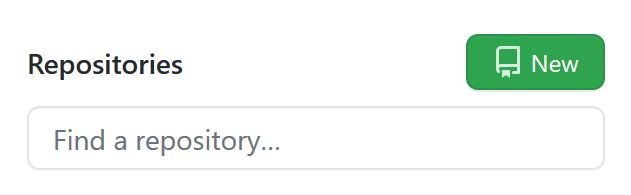

What is Git?
Git is a version control system that is used to keep track of changes made in your development project. Git is also the most widely used version control system for both commercial and open-source projects due to its ability to work with various operating systems and Integrated Development Environments or IDEs. It was originally developed in 2005 by Linus Torvalds.
Although Git is the most popular version control system in use today, there are numerous alternatives. What they all have in common is that they are software tools used help a software team manage changes in their source code. Not only can they be useful for team projects but also be useful for individual projects as well.
Why is Git Useful?
Using version control software like Git can be very beneficial to a team and individual projects. Version control software helps you keep track of changes to your source code. In addition, if for some reason the latest changes made to your source code result in errors, you can revert back to a previous version of your code and fix the error. If you’re working with a team member, you can create separate copies of the code, work on different projects and then merge both copies back to the original and the source code will be updated include both team members changes.
Sounds handy right? Then let’s get started with some Git basics to get you up and running.
Getting Started
The first thing you’ll need to do is install Git. For Windows you can install Git Bash which is an application for Microsoft Windows environment which installs both Git and Bash. It provides you the ability to use both Git and Bash commands in the terminal on your computer.
For Mac and Linux users, you likely already have Bash installed since its popular default shell on these operating systems. To download Git, instructions are provided for each operating system below:
https://git-scm.com/downloadsOnce you have Git install, open up the Bash (for windows open up Git Bash) terminal, and let’s make sure you have Git downloaded and running correctly. In the terminal type:
git --versionIf you installed it correctly you should see the version of Git that is currently installed.
Setting Up Global Git Configurations
Next, we’ll configure Git to identify you by adding your username and email. In the Bash terminal we will do the following:
To Update Username:
git config --global user.name “Your Name”To Update Email:
git config --global user.email “Your Email”These configurations will be simply used to identify who made what changes in your source code.
Setting Up a Repository
(git init command)
First, make sure your working directory in the terminal is currently located in your project's main folder (this is the folder that would contain all the files related to your specific project). If you don't have a project or want just want to practice, create a new folder, give it a name (avoid having spaces in your project folder names! This causes issues accessing them using Git Bash) and save it on the Desktop. Then create a README.md text file and save it in the new folder.
Next, make sure your Git Bash terminal working directory is located inside your new folder by using the pwd and cd commands (Or use the quick tip I showed you earlier to quickly navigate to the folder).
To create a new Git repository for your project, type the following:
git initThis will create a .git file in your root or main folder of the project. To see this file in the terminal type the following Bash command:
ls -aThe ls command allows you to see the files listed in the working directory. The ls -a command allows you to see all files including hidden files. Since the .git file is considered a hidden file, without the -a command, you would not be able to see the .git file listed in your root folder.
Now you have created a Git repository that will keep track and save the changes you make to your source code. Next, we will need to add your project files to the Git repository to keep track of the changes that are made in your source code.
Adding Files and Saving Changes to Your Repository
(git add, git commit commands)
After you have created your new Git Repository, if you already have files in your project folder type the following in the terminal to see what files and changes to the source code have not been added to your Git Repository:
git statusThe git status command is a great way to see what files have not been added to the repository. It is also useful in giving you suggestions on what steps to take next when you forget how to add files to your repository.
If you have one file or just want to add specific files to the repository you can type:
git add filenameFor example, to add just one file:
git add README.mdTo add multiple files:
git add README.md index.htmlIf you have multiple files to add to your repository and you don't want list each file, you can add all files at once using the following command:
git add .Now your files been added to a staging area. The staging area is the step prior to committing your files to your Git repository. This process is similar to adding files to a holding area before committing the changes to be made to your Git repository. Adding files to the staging area provides you opportunity to review your files before officially committing them to the repository.
Now when you type:
git statusyou should see the files you added, listed under changes to be committed.
To commit your changes type:
git commit -m "Type a brief message of the changes you did"For example:
git commit –m “Added README.md file”This will add a new commit and document what changes were made.
Alright! You made your first commit! To view the history of your commits that you have made type:
git logQuick Tip! When finished viewing git log, press
qto quit out of the log
The git log command will show you a list of all commits you have made in your Git repository.
Lastly, we will go over how to send your changes to a remote repository so that you may access your files from anywhere.
Sending Changes to a Remote Repository
(GitHub Set up, git push and git remote commands)
Up to this point we have made commits to our local repository. If you are typically working on one computer or laptop and you do not plan to share your source code, you are not required to do any of these next steps. You simply would continue to make commits in your local machine. However, what if you want to work on a project from another computer or for some reason you are unable to access your local machine? That is where remote repositories come in and you may want to strongly consider having a back up even if you are working on a solo project.
Remote repositories allow you to keep a back up of your source code that you or another developer can download and access on another machine. Websites such as GitHub, GitLab, and BitBucket make this process possible to do since they can store your code and provide options on whether or not you want your code to be accessible to others. These websites also make it possible for teams to work together on commercial or open-source projects as well.
There are several options to choose from when setting up a remote repository but today we will use GitHub since it one of the most popular sites to manage code remotely.
Creating a GitHub Account
The first step is to create a GitHub Account. Go to https://github.com and create an account if you don't already have one. Be sure to choose the Free subscription plan. Once you have created one, locate the new repository button on the GitHub website and click new repository:
Next, choose a name for your repository that relates to your current project. Then, select whether you want your repository to be public or private (typically if it’s a project you want to show or share with others you select public; otherwise, you can choose private).
Lastly, since we already have an existing repository on our local machine and plan to send our files to a remote repository in GitHub you can skip initializing repository with README and adding a license. You can always create these files in your local repository and send it to your remote repository later.
Pushing Our Changes to the Remote Repository in GitHub
(git remote, git commit commands)
Now that your remote repository in GitHub is set up, copy the url listed for your new repository. It should look something similar to this:
https://github.com/my-username/my-new-repository-name.gitNow go back to your terminal, and we will associate our local repository to our remote repository by typing the following:
git remote add origin https://github.com/my-username/my-new-repository-name.gitNext, we will push our changes to the master branch in our remote repository on GitHub by typing the following:
git push –u origin masterNote: -u is only required the very first time you are pushing changes to a new remote repository. Any future git push commands you want to do in the same repository, you can exclude the -u as such:
git push origin masterIn the previous command, origin is the default name given to the remote repository and a way to identify the remote repostiory you are connecting to. The name master is the default name given to the branch in your remote repository on GitHub. Both of the default names can be changed but it may be best to learn about how git repository branches work if you decide to use names other than the default. Examples in this technical documentation will use the default names. To learn more about branches visit https://git-scm.com/book/en/v2/Git-Branching-Basic-Branching-and-Merging
To ensure the files were sent to GitHub in your remote repository, check your GitHub Account to see if your remote repository has any updates that were made in the repository. You should see your project files from your local machine now added in your the repository you created in GitHub.
Summary
Congrats! You now have a basic understanding of Git, the Bash Terminal, and GitHub. We covered a variety of topics today including:
- ✔ How to set up Git, Bash, and Git Bash for windows
- ✔ How to use common Git and Bash commands
- ✔ How to create a local repository using Git
- ✔ How to commit changes to your local repository
- ✔ How to set up a remote repository using Git and GitHub
- ✔ How to send changes from your local repository to your remote repository on GitHub
The topics we went over today are incredibly useful when managing your own projects as well as team projects. These tools allow you to keep track of changes made to your source code, share your project with others for collaboration and allow you to go back to previous versions of your source code to correct errors or rollback unwanted changes made. These tools are used among experienced and new developers alike so practicing with these tools now will help you get up to speed with working in team projects.
Although we covered various topics today, there is still much more learn about Git. Below are some helpful resources to help you improve your understanding of Git:
References
Learn More About Git:
- https://www.atlassian.com/git/tutorials/what-is-git
- https://www.atlassian.com/git/tutorials/what-is-version-control
- https://www.atlassian.com/git/tutorials/setting-up-a-repository
- https://www.git-scm.com/doc
- https://git-scm.com/book/en/v2/Git-Branching-Basic-Branching-and-Merging
Practical Video Guide on Learning Git in 15 Minutes or Less by Colt Steele:
Thanks so much for reading and happy coding!